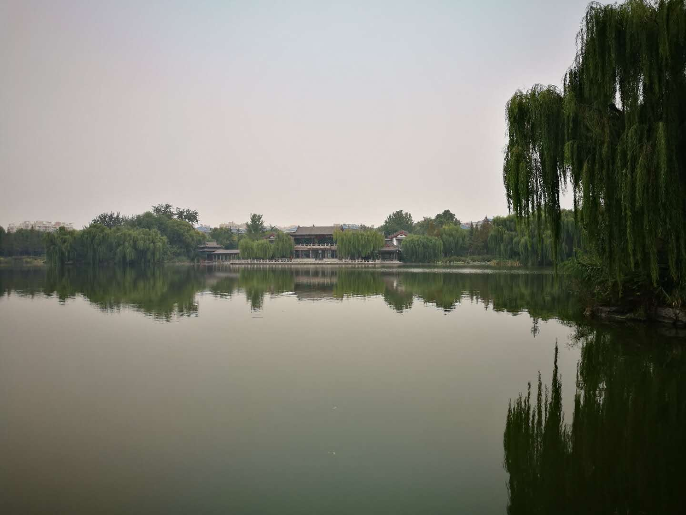
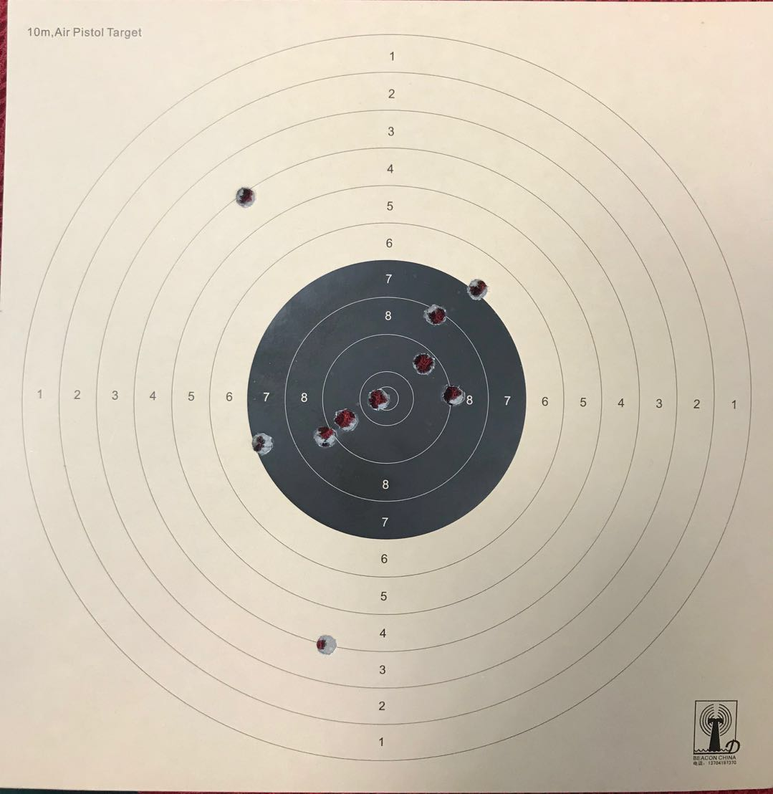
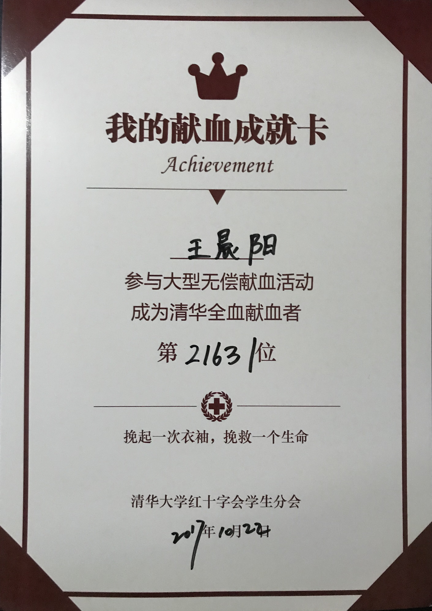
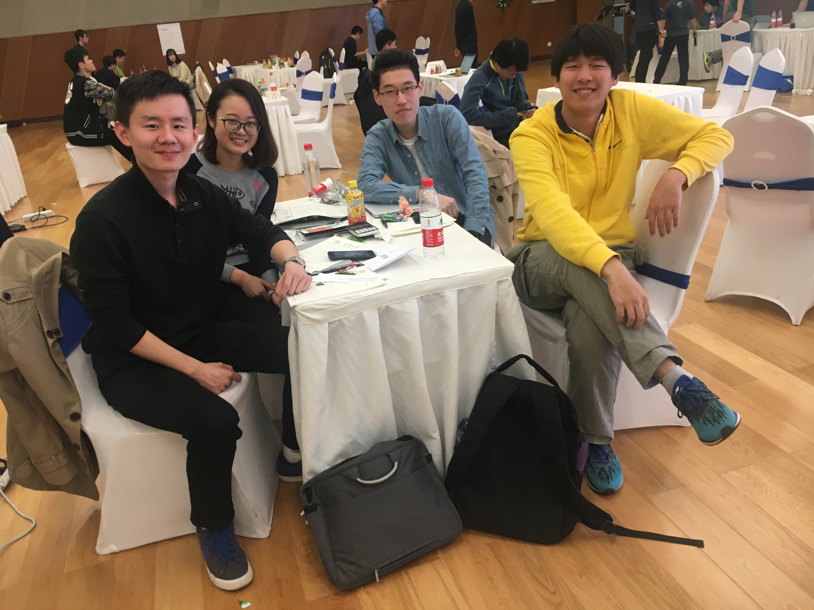

新的起点——记大四上
大四和之前的学期可以说是截然不同，不再像以往一样，学习、社工、生活几条线按部就班处理好就安稳地过去了。大四上这学期更像是事件驱动，从腾讯小学期结束回到学校，就面临推研的一系列事情和奖学金评定；学期中开始依图的实习，同时兼顾课程和实验室；学期末则着手毕设的事情。往常花费较多时间的专业课学习和社工在这学期反倒没占什么时间。因此这学期的总结就不分大的方面来写了，会按时间顺序选取一些关键性的事件进行简单的梳理，记下这学期的所见所感。
推研
学期初面临的最大挑战就是推研了，要说其实也并不需要太紧张，已经商定好要去人智所读“用户建模和个性化推荐”方面的博士，和老师也商量好了，如果不出意外正常走下来流程就稳稳的，但真放在那个时候还是紧张。推研流程分两部分，先参加机试，考察算法和工程能力；再参加面试，分为专业面试和心理面试。
过程就不细说了，虽然紧张，但也都挺顺利的。机考拿下了超过一半的分数，虽然不高，但也够用了；面试上，心理面试英文对话有点不太流畅，专业面试就是吹嘘自己了，表现比较稳定。总之最后顺利直博，又要在园子里待上五年的时光。回头想想其实自己选了一条最稳健的道路，可能和自己性格比较相关吧，不太想出国读，比起工作，更想经历一段不一样的学术生活，接受科研训练，毕竟工作以后还要工作一辈子，而这段学术经历错过了可能就很难有了，也算是给自己多一种体验。
推研后就开始常驻实验室了，说真的实验室氛围真是非常好了，师兄师姐都很nice，整体十分和谐，我也希望能尽快融入进去，现在还是有一些放不开哈哈。这一学期间在实验室有了工位、置办了显示器触控板等设备、参加《机器学习》读书会、一起去健身、一起去香山秋游等等，已经有了很多美好的经历，相信之后在这里会是十分丰富精彩的五年，也请大家多多关照。
奖学金
学期初和推研同步进行的就是每年的奖学金评定了。这三年来，第一年根本没想着评奖学金；第二年凭借社工拿了个“社会工作奖”；大三这一年学习上下了功夫，成绩排到了年级第十，刚好有资格申请“综合优秀奖”，于是就申请了一下试试看。本来听说各年级总共选8个人，后来变成每个年级选8个人，每个年级的前十名可以参加答辩评选。但我一直觉得希望不大，即使一个年级8个人，成绩排在前十的最后一位也不占什么优势。
答辩当天恰好是十一假期前的最后一个晚上，十分期待放假，基本照着推研的面试又吹嘘了自己一番，主要突出的学习之余社工上的经历。几天后，接到了好消息，竟然真的评上了这个“综合优秀奖”！说真的这件事挺鼓舞我的，之前从来没想过能在本科拿到系里这种层次的奖学金，虽然不是最高荣誉，但也是较高水平的了，至少证明了自己的努力是值得的，对之后的学习科研也是一个很大的激励。学期末奖学金到账的时候，开心地给寝室换了台电脑，又办了张健身卡，这种自己赚钱享受生活的感觉确实不一样。
顺便提一下申请的另外一个“唐立新奖学金”，这个是全校级别的，评本科生30个左右，当时顺手投了申请，没想到还进了最后的面试，最后阶段只有40个人，反倒让我有一点能中的希望。但真到面试当天就知道崩了，面试时每人站起来介绍自己基本都是各系的年级第一，不是第一都不太敢说学习，其他方面也是各有各的牛逼之处。最后不出意外的没有入选，这也让我看到自己和真正学校里的大牛之间有多大的差距，真的是认识到再努力都不为过了。
旅行
这学期去了挺多地方旅行的，一方面在腾讯实习期间时间比较多，另一方面学期初推研后周末都比较闲，所以有一段时间每周末都会和梁出去旅行。细数起来，这学期去过厦门、天津、济南、北京的北海公园以及各个巷弄。那段时间推研和奖学金都结束了，没有什么心理压力，真的可以说是十分闲适美好的一段时光了。
厦门是在深圳的时候去的，只待了一天多的时间，夜游厦大、在小巷里吃正宗的沙茶面给我留下了深刻印象。


天津其实去过好几次了，这次选了个不一样的地方，是天津比较偏僻的博物馆附近。那里有一个广场，集中了科技馆、博物馆、美术博物馆等多个场馆，十分有的逛，周边也不乏大型商场解决吃饭的需求。印象最深的还是广场中央的人造湖，坐在湖边的台阶上看着平静的湖水就觉得很安心。前一天晚上坐在那里看了音乐喷泉，第二天更是在台阶上做了一下午晒太阳，很是惬意，非常养老的生活了。


济南其实离北京很近，很快就到了，在这主要逛了趵突泉、泉城广场、大明湖畔以及巷弄里的流水人家，这里的景色真的是非常怡人了，特别是大明湖公园以及巷弄里的风景，令人心旷神怡。但在济南除了景色，印象最深刻的其实是由于我的失误把手包丢在趵突泉景区了，里面有银行卡和我们俩的身份证，当时真的懵逼了，没有身份证晚上晚上就没有地方住要流落街头，甚至连回北京的火车票都难买…… 就在悲痛欲绝之时，一个电话拯救了我们，景区派出所的民警捡到了手包，查到了我们的电话，东西一样没少，那时真的可以说是喜极而泣了，太过激动。现在发自内心地感受到警察叔叔的重要性，社会主义好啊。也幸亏找到了，不然我就惨了哈哈。



至于北京的一系列地方，都是十分养生的逛法，走在老胡同里很有感觉，有些地方像回到了家一样充满生活气息。还有傍晚的北海公园，也是别有一番景致。

课程
过了学期初的推研、奖学金评定，以及闲适的旅行时光后，就开始进入学期的正轨，但这学期只有两门课，基本没怎么花时间，学期中更多是在实习。其实2017年在实习上经历了不少，花费精力较多，从年初准备面试，到暑假在腾讯的小学期实习，再到学期中在依图的实习，有挺多感悟，准备之后单开一篇详细记录下这一年实习方面的事情。课程的话这里简单提一下：
- 信息检索 [93]
凭兴趣选的一门专业课，感觉和实验室所做会有一定相关，课程主要介绍了和信息检索相关的技术，学习了word2vec、LSI，以及以前也接触过的朴素贝叶斯、k-means聚类和情感分析等。作业难度适中，做起来比较得心应手，数量可能稍多一些，但对我这种课不多的也没什么压力。有些作业比较好的一点是给的数据集都很小，甚至可以手算，这样在做的过程中可以从最细节方面看懂算法是如何运作的。大作业的话是搭一个搜索引擎，有一些特殊要求，其他大框架和之前搜索引擎课差不多，直接拿来改一改就差不多了。总体来说中规中矩的一门课。
- 射击 [88]
之前一直想选来着，这学期课不多正好选了。课程非常好玩了可以说，打十米气手枪和气步枪，一下打个够，每节课都能打几十发。经过练习最后射击的准度还行，遗憾的是没有一次能十发子弹全打进黑点，算是体验一下射击的感觉吧，我们用的气步枪还是当年易思玲奥运夺冠使用的，设备非常好，老师也很nice，很棒的一门课。

毕设
学期末面临的主要问题就是毕设开题了，当时对于如何选题纠结了好久，也看了不少论文，但想到的大多是现有模型的改进，感觉意义不大。最后毕设想法的确定还是来源于和梁的一次聊天，提到目前电商推荐系统普遍存在的一个问题，就是会推荐很多我并不需要的东西，比如我刚在寝室买了一个主机，给了好评，推荐系统就认为我喜欢主机，给我推荐了好多主机，但我其实已经买过不再需要了，这些推荐完全是无用的，没有任何的有效价值转化。
这个问题的根源就在于推荐系统往往只根据购买行为或者评分来衡量用户的喜好，而不考虑用户对商品的需求程度，如果能对用户的需求曲线进行建模，同时结合喜好程度，也许能刻画出有趣的现象，比如日常消费品的周期性购买，以及高档耐用品的一次性购买。这样就能做到在我买了牛奶饼干之后还可以推荐这些类似商品，但购买了电脑主机后就不再推荐主机，提高推荐的准确性与价值转化率。
至于如何刻画用户的需求程度，目前还在模型设计中，考虑了用Hawkes随机过程以及深度学习比如RNN来刻画的方法，有待进一步细化。
在模型设计的过程中也让我发现一个问题，不是关于模型的，是关于如何和导师讨论的。现在感觉经常遇到老师的思路和我不太一致，有时候是跟不上，有时候不是特别认可老师的思路。跟不上的时候不太好意思一直在当场想，浪费老师时间，先跳过之后再想的话又会引发连锁反应，越来越跟不上；不认可导师想法的时候则不太擅于表达自己的想法，可能稍稍有些胆怯。总之现在和导师讨论的效率不高，需要想办法解决一下。一方面讨论前自己做好学习工作，尽量避免思路跟不上的情况，另外遇到讨论中思路上的分歧还是要当场说出来讨论清楚，没有什么好害怕的，讨论完留下心理负担更难受。
杂
除了以上提到的大块的事情，这个学期其实还有很多杂七杂八的事，在这部分简单记录下。
首先是报名当辅导员，当时想了挺久，主要担心辅导员可能会影响实验室科研，但想想不当辅导员的话博士生活主要就是科研未免有些单调，于是最后还是报名了，并且之后有较大可能担任八字班的新生辅导员。三年来虽然也做了不少社工，但我其实觉得我现在还是不太符合我内心对于辅导员的要求的，圈子没那么广，也不是很会聊天，还不够social，靠谱也许是我的一个优点吧。但不管我现在是否符合我心中对辅导员的要求，我对于辅导员这份工作的喜爱是诚挚的，尤其喜欢和新入学的新生们待在一起，想想也许就成为影响他们很久甚至一生的人，还有点小激动，我也确实希望用自己在大学的经验，能让他们少走些弯路，这是一件很有成就感的事情。至于那些能力，都还能培养嘛，人总是在改变的，我会努力让自己朝着辅导员的标准前进，再说也许新生们也需要一个话不多但靠谱的辅导员呢。
因为要当辅导员这学期还办理了入党，也算是一件大事吧，流程上因为是火速入党出了很多问题，学期中解决了好长时间，真的尴尬。
社工上这学期负责团委综合口事情不多，主要都是日常事务。团委书记会的几次感情建设倒是很成功，万圣节夜游北京欢乐谷、酒吧喝酒聊天，并且还有很明显成果的哈哈。下学期要开始“视窗计划”了，事情还是不少，有一些新的想法都要细化到可执行的程度，寒假期间也要为招新做准备啦。
这学期还去参加了献血，算是给大学的To Do List勾掉一项。献的时候到没太大感觉，只是感觉手臂逐渐变凉变麻，就像睡觉压到了一样，不过这次是有意识地感受到整个过程。

学期中参加了一次ETC比赛（电子交易大赛），程序控制股票市场交易的大赛。主办方模拟了一个股票交易市场，参赛者可以购买股票，以可变的汇率转换货币以购买不同股票，股票的价格也是受市场影响的，目标就是赚到最多的钱。这次比赛叫了央财的家祺来指导，还拉了班里的大腿，可是在一整天的时间里并没有想到非常fancy的策略，最后基本都依靠赚汇率差赚钱，排了个十几名，上了排行榜的末尾，算是来一日游了吧哈哈，本身当时参加也是想来混吃混喝的，目标已经完成了。

这学期还有学生节，到大四总算以观众的身份好好欣赏一次学生节，带梁来看了大半场，还是很开心的。
最后值得一提的是这学期实现了经济独立，实习工资加上奖学金足够日常生活还有不少富余。这算是一个标志性的学期了，花自己的钱有种莫名的爽快，虽然也更加心疼了。学期中利用富余的钱更新不少设备：实验室的显示器、键盘、触控板、寝室的电脑主机、健身卡等等，一通挥霍下去也差不多了哈哈。
娱乐上在腾讯实习期间不小心回了DNF的坑，深似海，不过一学期的时间从头起了一个深渊毕业的鬼泣号。另外还跟着梁去北京喜剧院看了《恋爱的犀牛》，经典话剧，感受了一把高格调的生活。

总的来说，这学期经历了和其他学期截然不同的生活节奏，学期前、中、后感受都很不同，学期初有推研的紧张，有旅行的闲适，学期中的平淡，学期末毕设的困扰，各有各的体验。但这种生活模式还有一个问题，就是没有了以往课程DDL的催促，日常在实验室的那种自我驱动力没有之前强了，有点不好，还是要找回之前让自己动起来的感觉。不过这也是过渡阶段正常的情况，下学期会着力解决这学期发现的各种问题。
不管怎样，是时候给大学本科的生活画上一个圆满的句号了，Fighting！